Examples
Six common graphs in cleanplots and in Stata’s default scheme
Each example below draws the same graph twice: once with scheme(cleanplots) and once with scheme(stcolor), Stata’s default scheme since Stata 18 (substitute s2color for the default of earlier versions). Nothing else about the commands changes. The graphs are drawn with the data from usetdm, so every example can be run as shown. With set scheme cleanplots, perm in place, the scheme() option is not needed.
Histogram
use "https://tdmize.github.io/data/data/addhealth4", clear(addhealth4_dmv.dta | Add Health Wave IV | DMV Workshop)
. hist vidtv, percent scheme(cleanplots)(bin=36, start=0, width=4.6666667)graph export "fig/ex-hist-cleanplots.png", replace width(1400)(file fig/ex-hist-cleanplots.png not found)
file fig/ex-hist-cleanplots.png saved as PNG formathist vidtv, percent scheme(stcolor)(bin=36, start=0, width=4.6666667)graph export "fig/ex-hist-stcolor.png", replace width(1400)(file fig/ex-hist-stcolor.png not found)
file fig/ex-hist-stcolor.png saved as PNG format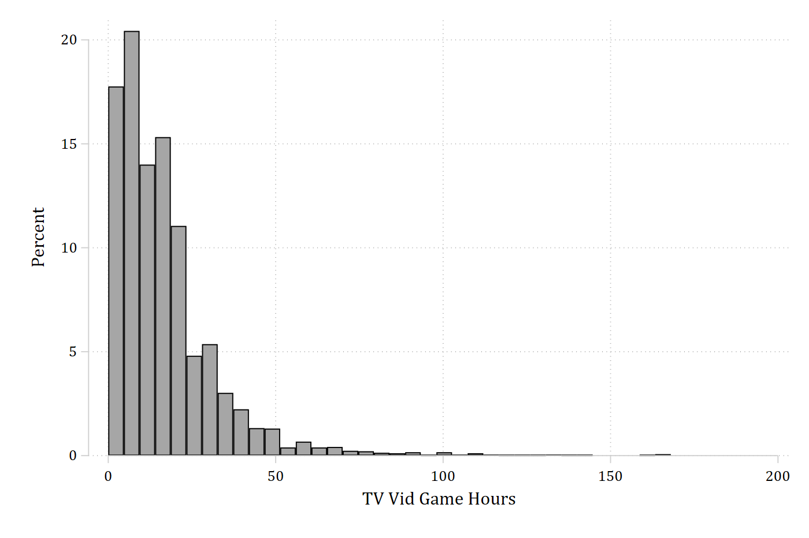
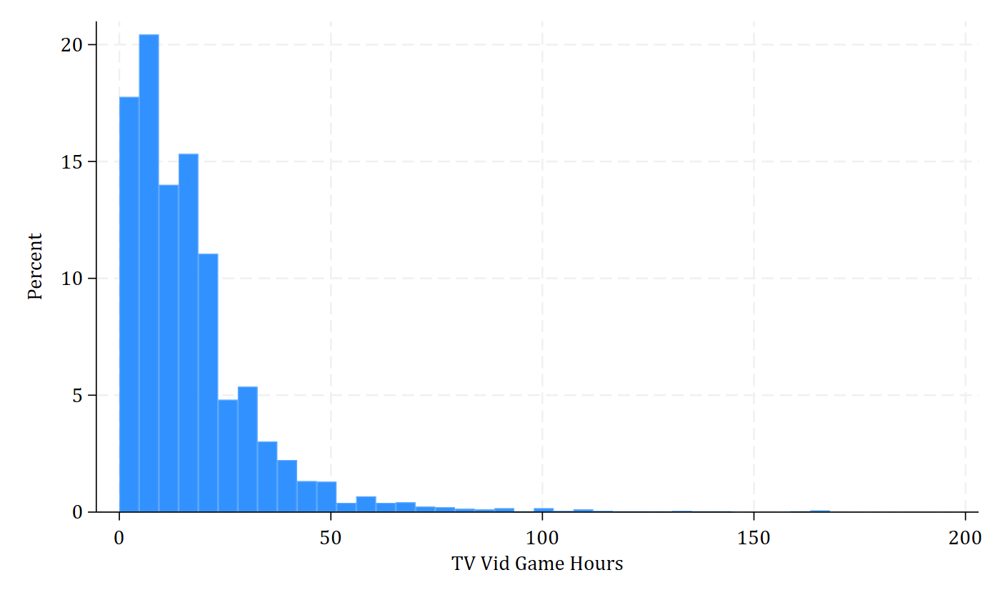
Predictions from an ordinal logit with dashed confidence intervals
quietly ologit health orole vrole i.woman age income i.race i.educ
quietly margins, at(orole=(0(1)10)). marginsplot, recastci(rline) ciopts(lpattern(dash) color(*.5)) scheme(cleanplots) ///
legend(order(6 "Poor" 7 "Fair" 8 "Good" 9 "Very Good" 10 "Excellent"))Variables that uniquely identify margins: orolegraph export "fig/ex-ologit-cleanplots.png", replace width(1400)(file fig/ex-ologit-cleanplots.png not found)
file fig/ex-ologit-cleanplots.png saved as PNG formatmarginsplot, recastci(rline) ciopts(lpattern(dash) color(*.5)) scheme(stcolor) ///
legend(order(6 "Poor" 7 "Fair" 8 "Good" 9 "Very Good" 10 "Excellent"))Variables that uniquely identify margins: orolegraph export "fig/ex-ologit-stcolor.png", replace width(1400)(file fig/ex-ologit-stcolor.png not found)
file fig/ex-ologit-stcolor.png saved as PNG format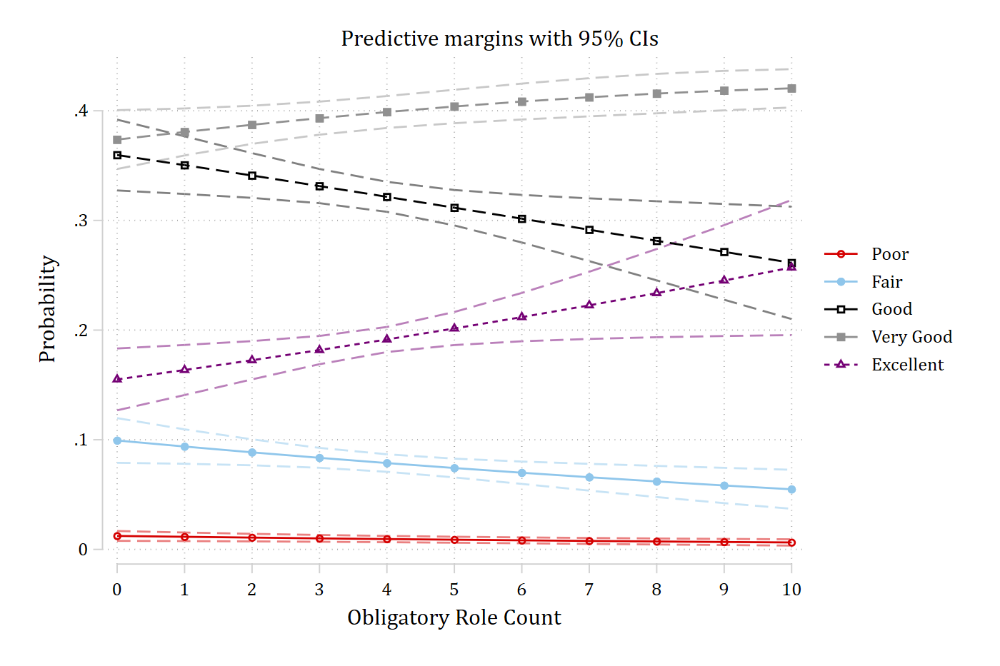
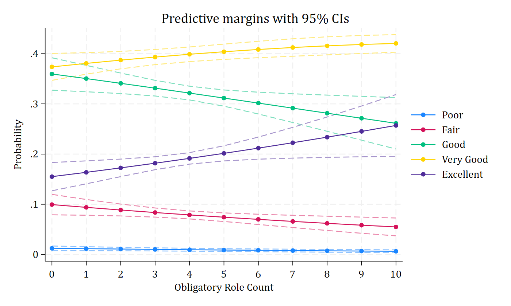
Predictions at combinations of two nominal variables
quietly logit alcB i.woman##i.parrole c.age i.race i.educ c.wages
quietly margins, at(woman=(0 1) educ=(0(1)4)). marginsplot, recast(scatter) x(educ) scheme(cleanplots)Variables that uniquely identify margins: woman educgraph export "fig/ex-pred-cleanplots.png", replace width(1400)(file fig/ex-pred-cleanplots.png not found)
file fig/ex-pred-cleanplots.png saved as PNG formatmarginsplot, recast(scatter) x(educ) scheme(stcolor)Variables that uniquely identify margins: woman educgraph export "fig/ex-pred-stcolor.png", replace width(1400)(file fig/ex-pred-stcolor.png not found)
file fig/ex-pred-stcolor.png saved as PNG format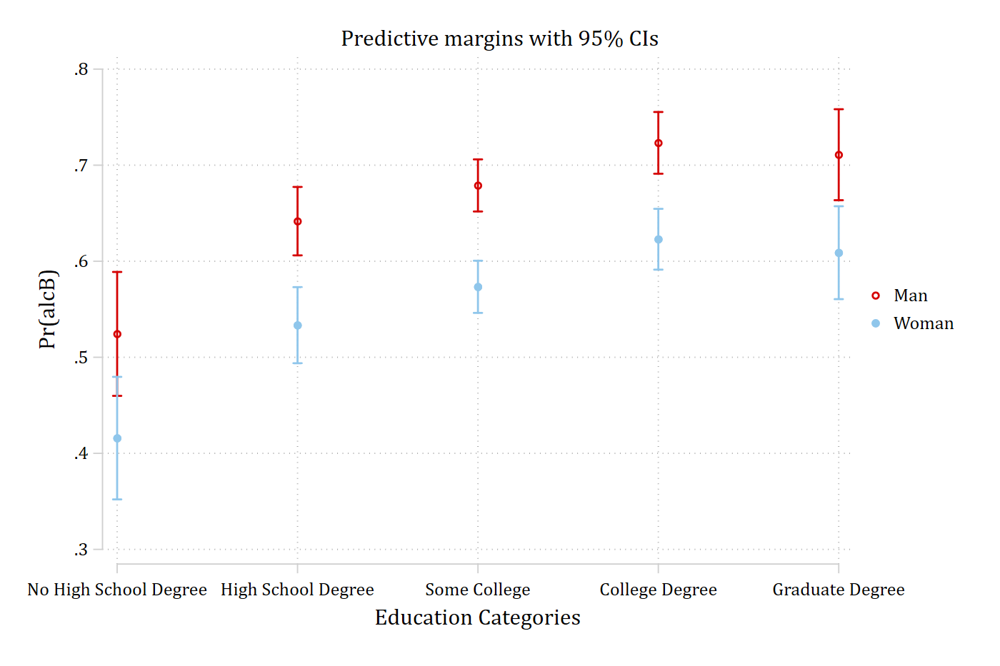
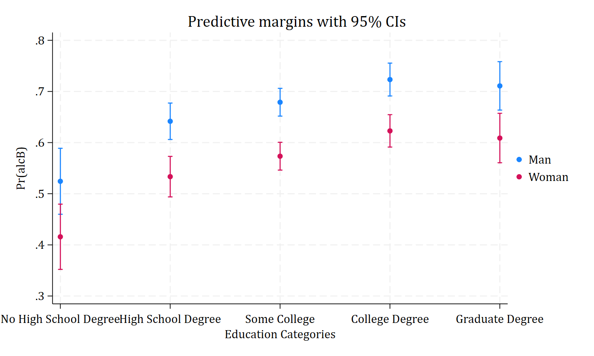
Bar chart with confidence intervals
cibar is a user-written command (ssc install cibar); cleanplots uses its softer palette for the bars.
use "https://tdmize.github.io/data/data/cda_gss", clear(cda_gss.dta | GSS 1972-2021 CDA - Categorical Data Analysis | date created 2023)
. cibar income, over1(degree) over2(woman) graphop(scheme(cleanplots))
graph export "fig/ex-bar-cleanplots.png", replace width(1400)(file fig/ex-bar-cleanplots.png not found)
file fig/ex-bar-cleanplots.png saved as PNG formatcibar income, over1(degree) over2(woman) graphop(scheme(stcolor))
graph export "fig/ex-bar-stcolor.png", replace width(1400)(file fig/ex-bar-stcolor.png not found)
file fig/ex-bar-stcolor.png saved as PNG format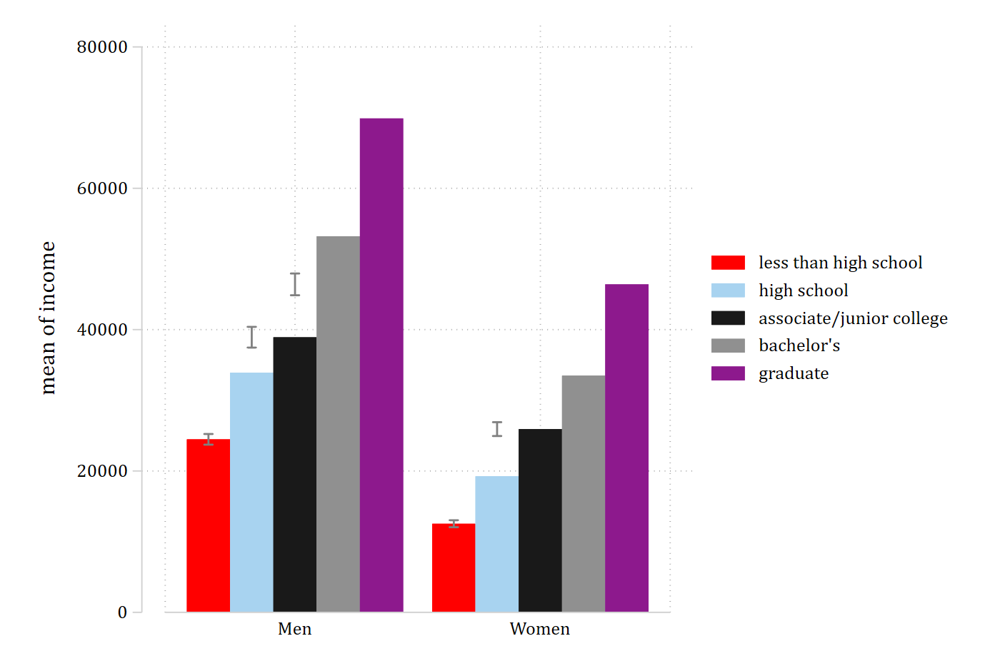
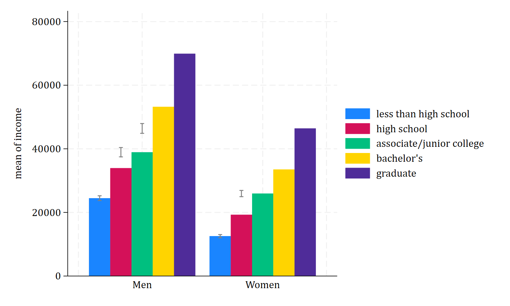
Residual and influence plot
use "https://tdmize.github.io/data/data/pew16", clear(pew16_dmv.dta | Pew 2016 Pre-Election Data | DMV Workshop)
. quietly logit trump i.woman c.age ib4.educ i.race i.polparty3 ///
i.religB c.income ib3.region
gen index = _n
predict residstd, rs
predict influence, dbeta. twoway scatter residstd index [w=influence], scheme(cleanplots)(analytic weights assumed)
(analytic weights assumed)
(analytic weights assumed)graph export "fig/ex-resid-cleanplots.png", replace width(1400)(file fig/ex-resid-cleanplots.png not found)
file fig/ex-resid-cleanplots.png saved as PNG formattwoway scatter residstd index [w=influence], scheme(stcolor)(analytic weights assumed)
(analytic weights assumed)
(analytic weights assumed)graph export "fig/ex-resid-stcolor.png", replace width(1400)(file fig/ex-resid-stcolor.png not found)
file fig/ex-resid-stcolor.png saved as PNG format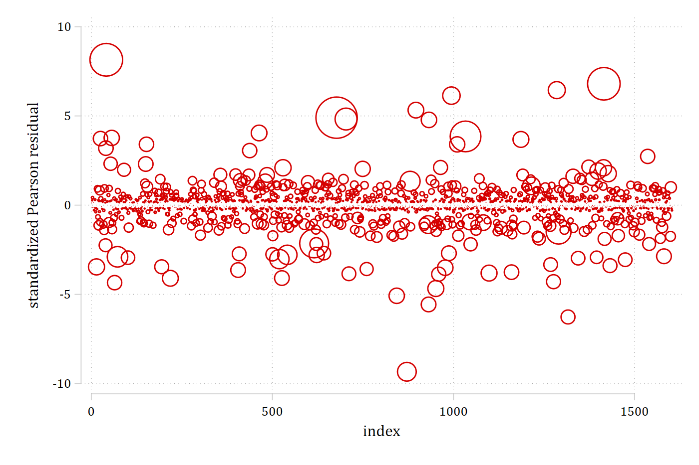
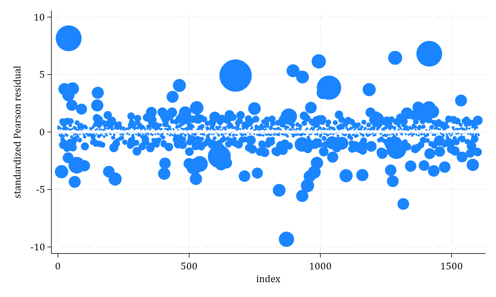
Lowess plot
use "https://tdmize.github.io/data/data/scireview3", clear(Biochemist data - updated for CDA Stata guide)sort phd. lowess jobimp phd, scheme(cleanplots)
graph export "fig/ex-lowess-cleanplots.png", replace width(1400)(file fig/ex-lowess-cleanplots.png not found)
file fig/ex-lowess-cleanplots.png saved as PNG formatlowess jobimp phd, scheme(stcolor)
graph export "fig/ex-lowess-stcolor.png", replace width(1400)(file fig/ex-lowess-stcolor.png not found)
file fig/ex-lowess-stcolor.png saved as PNG format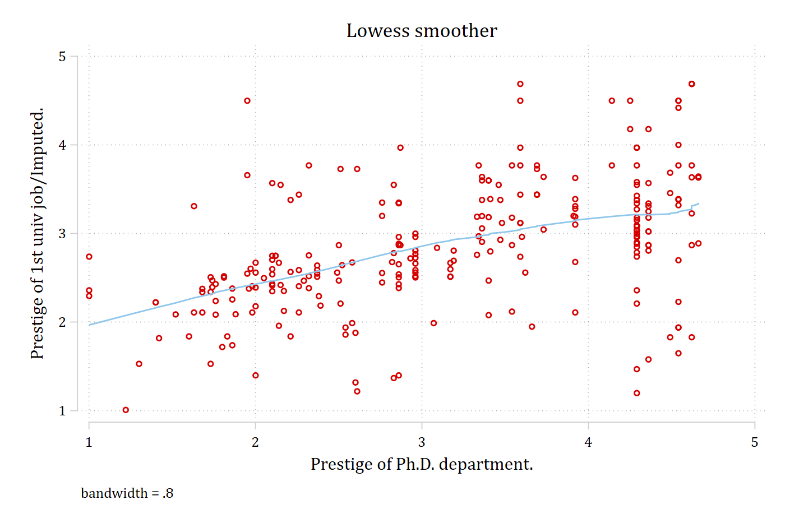
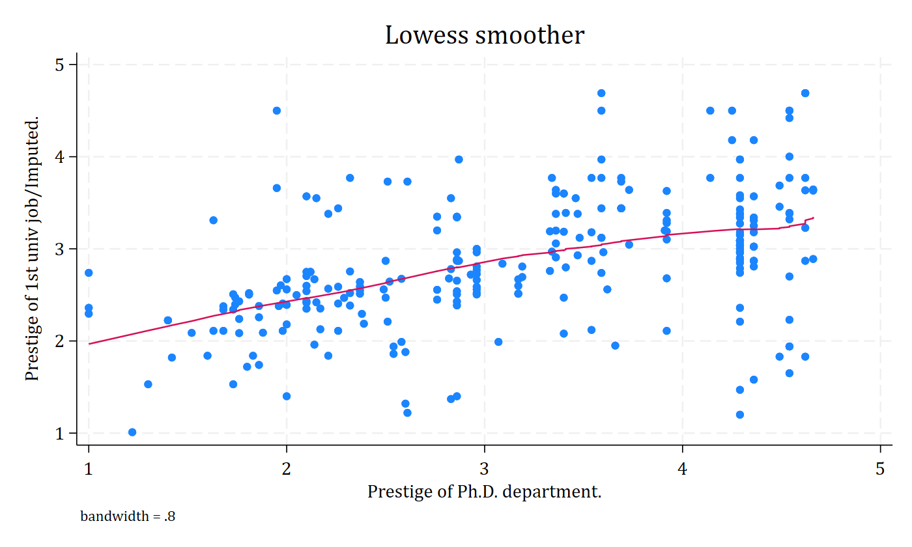
All ten colors
A scatter plot with ten groups and the matching bar chart show the full palette, with the darker and lighter colors alternating.
use "https://tdmize.github.io/data/data/cda_gss", clear(cda_gss.dta | GSS 1972-2021 CDA - Categorical Data Analysis | date created 2023)
. twoway scatter income occprest if isco88cat == 1, msize(large) || ///
scatter income occprest if isco88cat == 2, msize(large) || ///
scatter income occprest if isco88cat == 3, msize(large) || ///
scatter income occprest if isco88cat == 4, msize(large) || ///
scatter income occprest if isco88cat == 5, msize(large) || ///
scatter income occprest if isco88cat == 6, msize(large) || ///
scatter income occprest if isco88cat == 7, msize(large) || ///
scatter income occprest if isco88cat == 8, msize(large) || ///
scatter income occprest if isco88cat == 9, msize(large) || ///
scatter income occprest if isco88cat == 10, msize(large) || ///
, scheme(cleanplots)
graph export "fig/ex-ten-scatter-cleanplots.png", replace width(1400)(file fig/ex-ten-scatter-cleanplots.png not found)
file fig/ex-ten-scatter-cleanplots.png saved as PNG format
. cibar income, over(isco88cat) graphop(scheme(cleanplots) title("Average income by occupation"))
graph export "fig/ex-ten-bar-cleanplots.png", replace width(1400)(file fig/ex-ten-bar-cleanplots.png not found)
file fig/ex-ten-bar-cleanplots.png saved as PNG format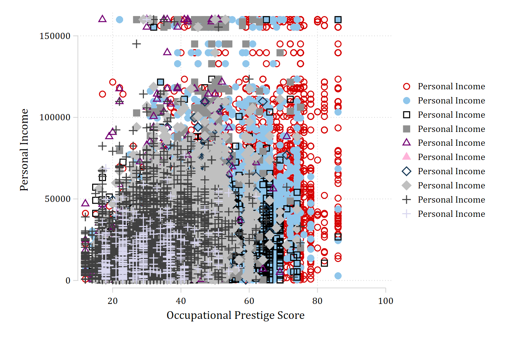
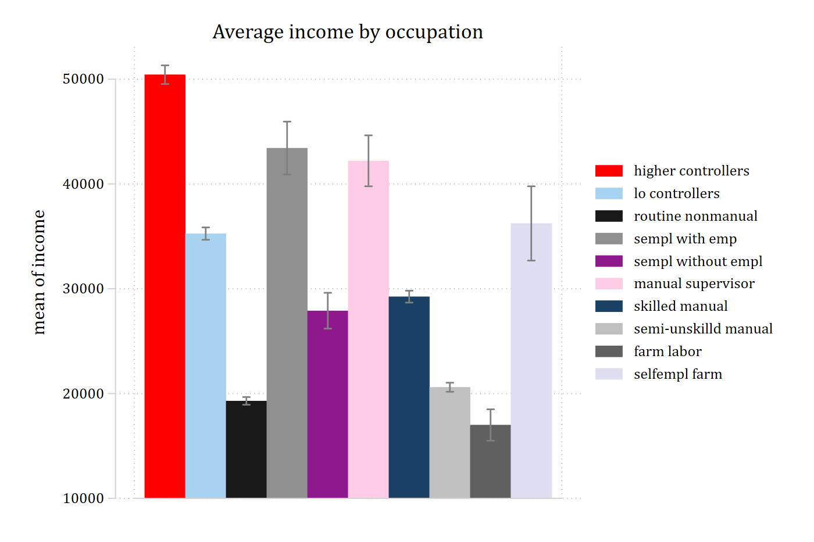